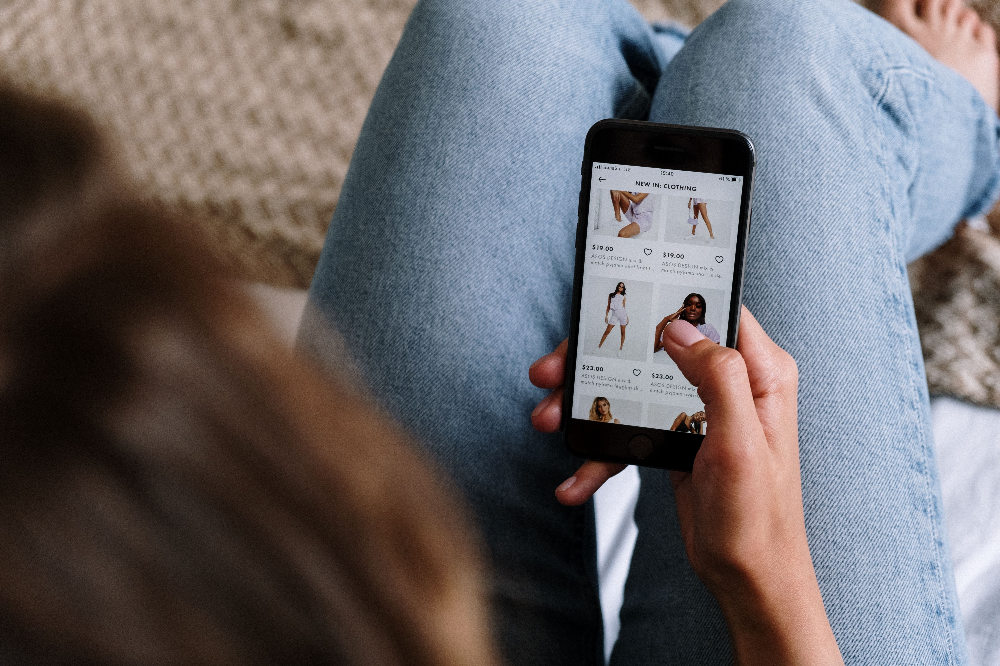

Users by City · 09/01/23–01/31/24
New York leads city-level users
New York leads with 15.0K users, followed by Toronto at 11.0K, Mountain View at 9.0K, and San Jose and Sunny Vale tied at 7.0K users.
Users by City
Line graph comparison of the highest user cities.
Users by country
United States is the highest-user country.
351K
current users
318K new · 80K returning
Geographic user heat map
Country-level users with pulsing markers for Uganda, Mexico, India, Canada, and the USA.
City Users Overview
49,000 city users tracked in the overview
The strongest regional story is the United States, which produced 57.7% of country-level users and 202,527 users during the analysis period.
User Acquisition
Direct and paid channels lead acquisition
Most users arrive via direct traffic or paid ads. Organic traffic mainly comes from Google, while referrals and cross-network clicks also contribute meaningfully.
Primary channel acquisition
Horizontal row chart comparing users by primary channel.
Acquisition insight
Many visitors likely come through ads on other sites, including potential affiliate referrals. The steep October drop shows that user acquisition improved, but retention after the campaign remained a challenge.
User Engagement and Technology · 09/01/23–01/31/24
Mobile Android leads user volume, while desktop is most promising
Most new users engage through mobile devices, Android is the most popular operating system, and desktop users show stronger engagement potential.
Operating system users
Horizontal row chart of users by operating system.
New users by device
Horizontal row chart of new users by device category.
Sessions and average engagement by device
Grouped horizontal row chart with sessions and average engagement.

E-commerce Overview
High views do not automatically create purchase intent
The Super G Timbuk2 Recycled Backpack was most added to cart, but the G25gle Birthday Mug was the top purchase with 1,152 purchases.
Item revenue and purchases
Grouped horizontal row chart comparing revenue dollars and purchases.
Super G Timbuk2 Recycled Backpack
500,000,001,003,024 recorded as the item identifier in the analysis notes.
Top Purchase
G25gle Birthday Mug
Purchased 1,152 times; apparel and mugs appear more scalable than accessories.
January User Stickiness & Activity · 01/01/24–01/31/24
Users were most active in the weekly-to-monthly category
User activity steadily declined over the last 30 days. WAU/MAU is the strongest stickiness metric, while DAU/MAU remains poor.
Active user decline
1-day, 7-day, and 30-day active user trend during January.
Retention recommendation
Improve customer relationship management, satisfaction, mobile experience, and social proof to support brand trust, attachment, and repeat visits.
Recommendations
Recommendations for the Google Merchandise Store
Use acquisition, location, device, and product behavior findings to create targeted promotions that improve conversion while protecting channel value.
Discount strategy
Offer weekly and monthly product discounts for direct-site shoppers, and use smaller affiliate-link discounts to preserve affiliate attribution while still encouraging conversion.
Location and device targeting
Tailor promotions by city and country, prioritizing high-user markets such as New York, Toronto, Mountain View, and the United States. Build device-specific campaigns, especially Android and mobile promotions because they have the highest user volume.
Product focus
Promote high-purchase items such as the G25gle Birthday Mug and G25gle Birthday Tee while improving conversion paths for high-revenue items such as the Super G Timbuk2 Recycled Backpack.
References
- Hsu, C.-L., & Lin, J. C.-C. (2016). Effect of perceived value and social influences on mobile app stickiness and in-app purchase intention.
- Yu, N., & Kong, J. (2016). User experience with web browsing on small screens.
- Zhang, H., Hu, L., & Kim, Y. (2023). Dispel the Clouds and See the Sun: Influencing Factors and Multiple Paths of User Retention Intention Formation.